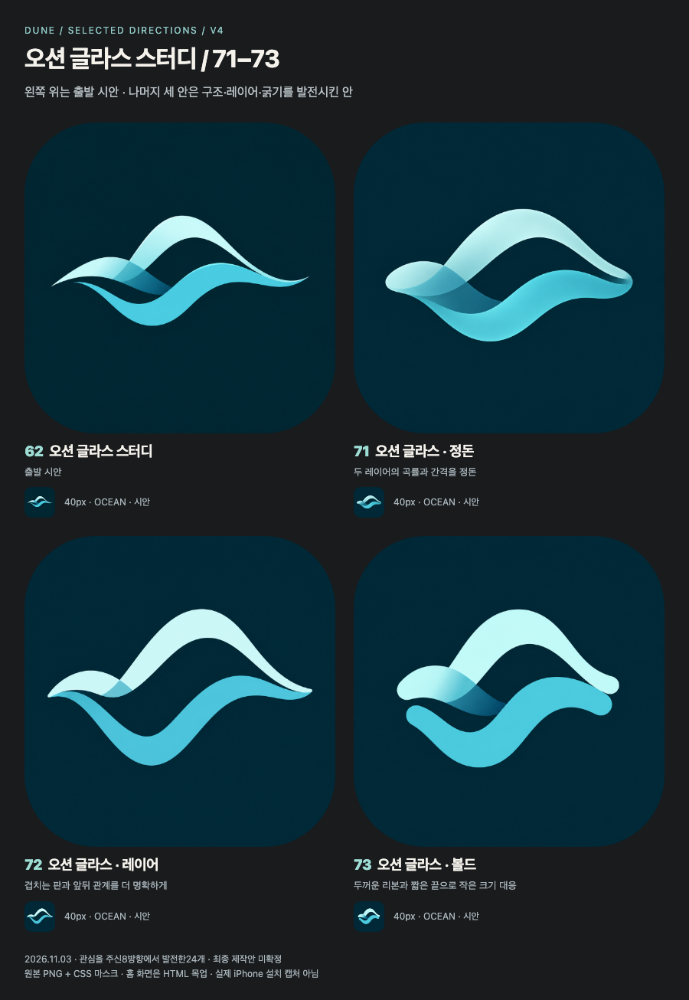
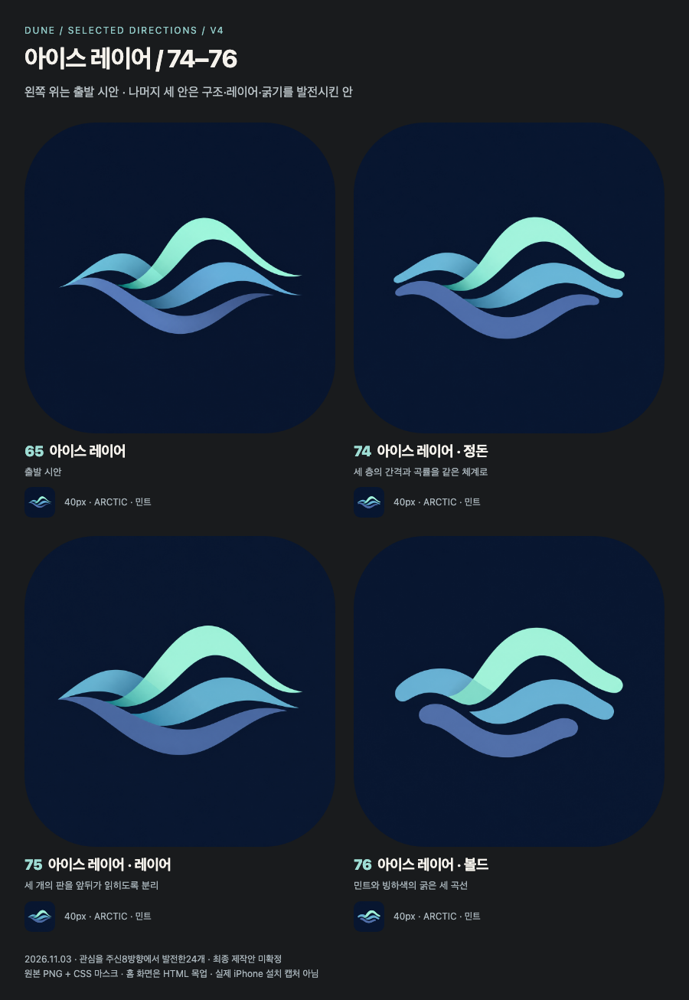
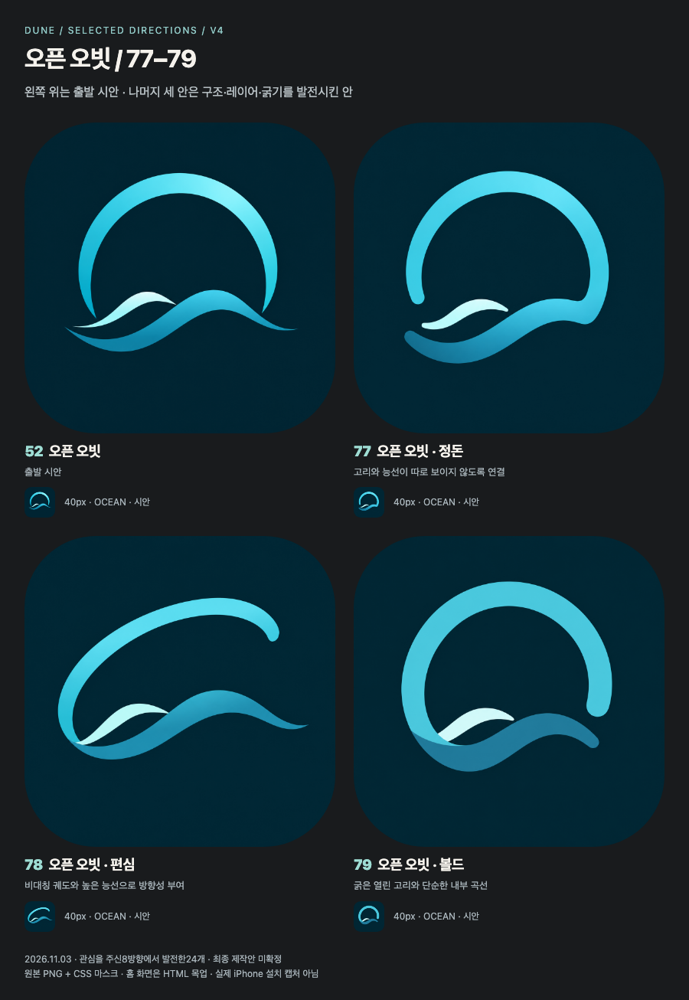
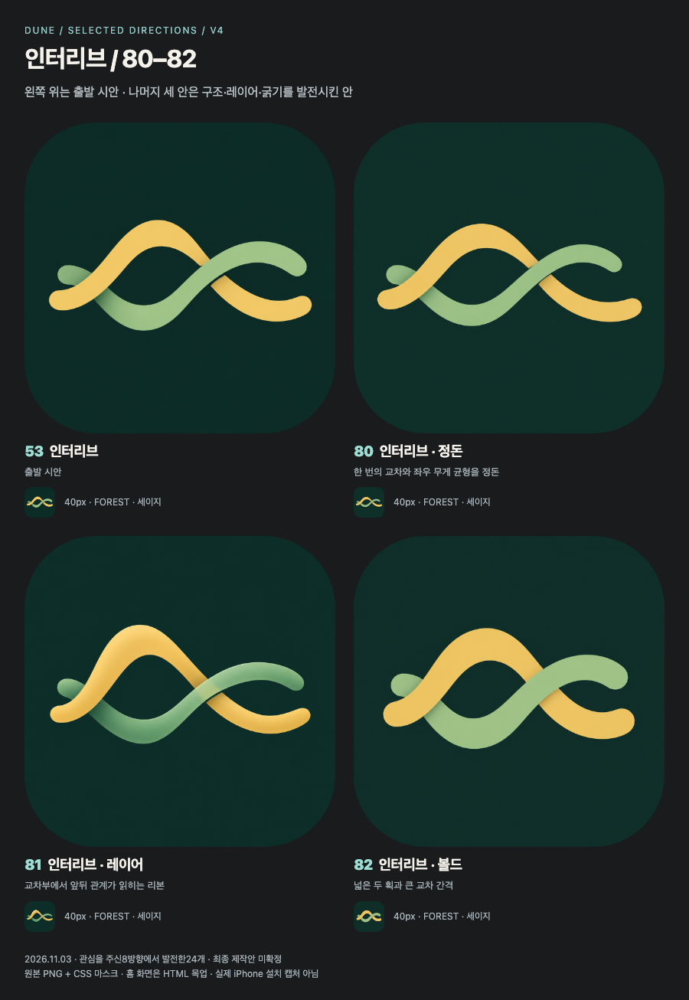
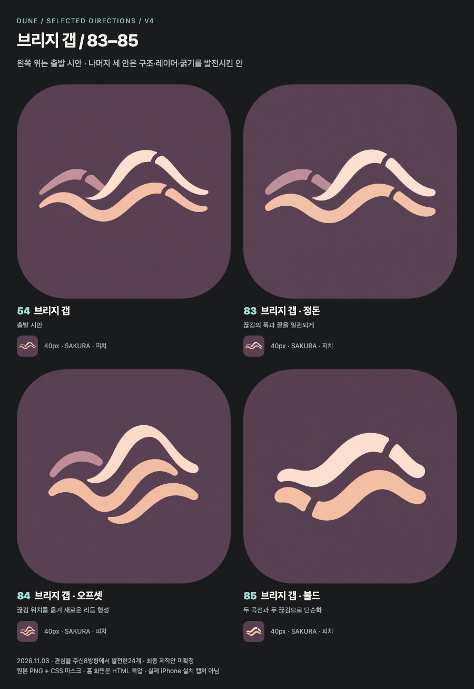
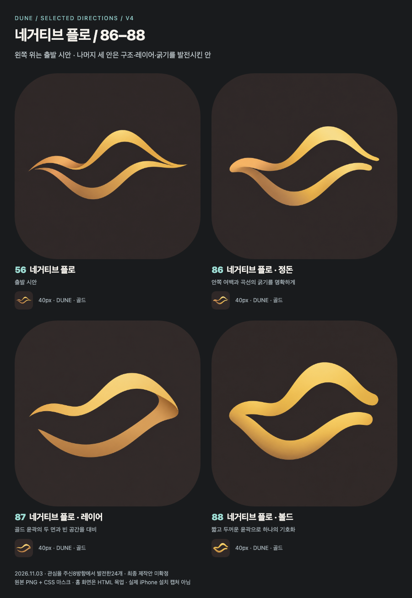
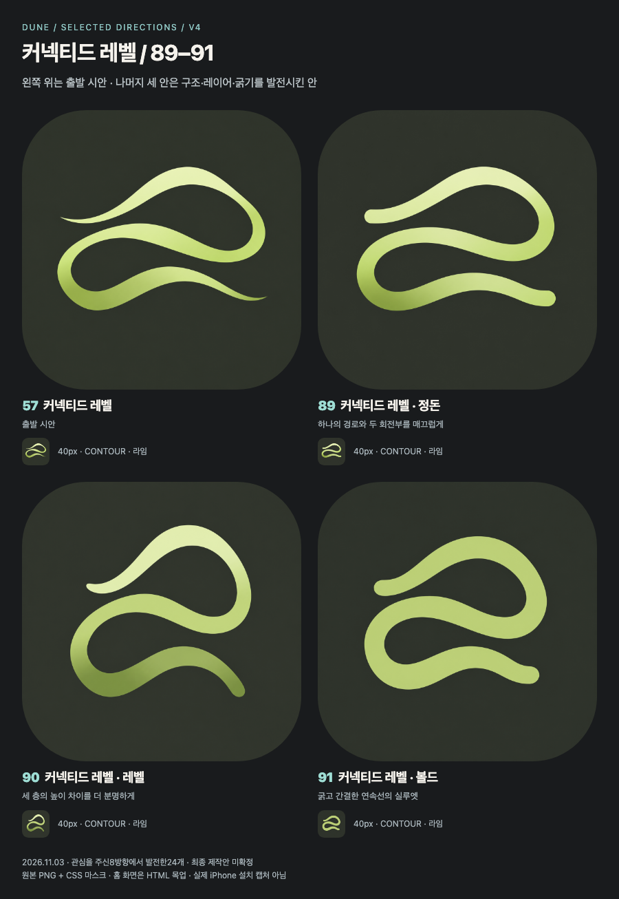
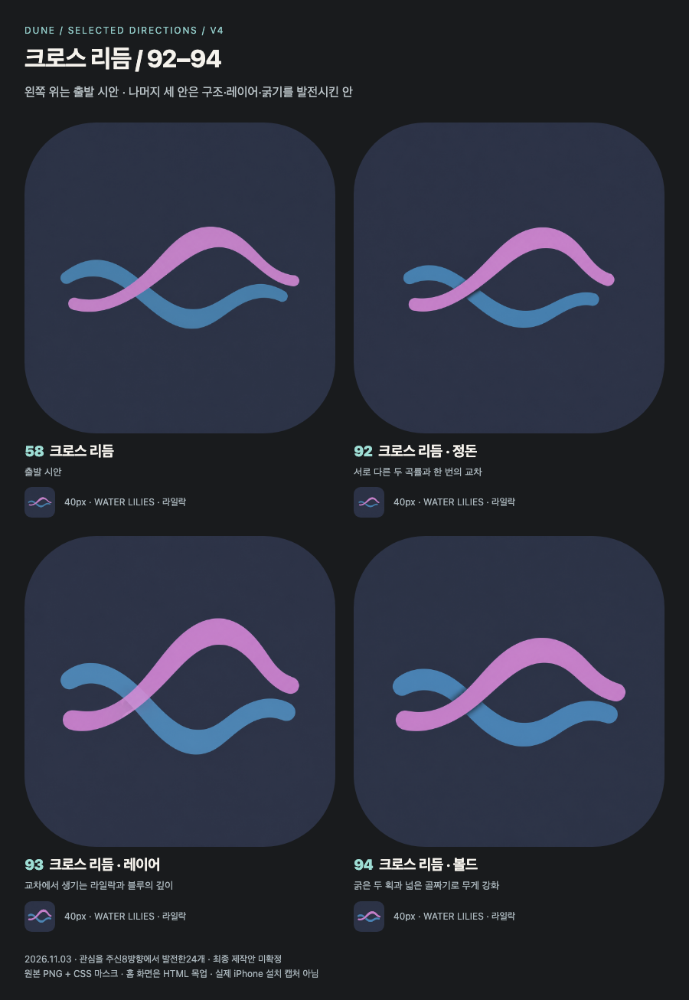

방향별 발전 비교오션 글라스 스터디
아이콘 비교 · 홈 화면 · 비교판 PNG

아이스 레이어
아이콘 비교 · 홈 화면 · 비교판 PNG

오픈 오빗
아이콘 비교 · 홈 화면 · 비교판 PNG

인터리브
아이콘 비교 · 홈 화면 · 비교판 PNG

브리지 갭
아이콘 비교 · 홈 화면 · 비교판 PNG

네거티브 플로
아이콘 비교 · 홈 화면 · 비교판 PNG

커넥티드 레벨
아이콘 비교 · 홈 화면 · 비교판 PNG

크로스 리듬
아이콘 비교 · 홈 화면 · 비교판 PNG
